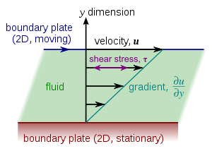
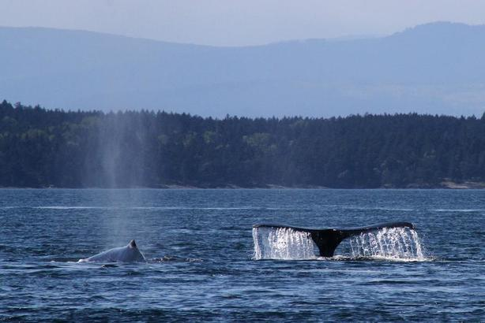

Software
GOTM is relative easy to install and run on most operating systems - just follow the instructions carefully.

Idealized cases
Idealized test case demonstrating various GOTM features.
Figure from here

Ocean cases
Realistic test cases demonstrating various GOTM features.
Photo by Hans Burchard.
Documentation
GOTM comes with a detailed documentation including some information on the theoretical background of individual the turbulence models.
Figure from here